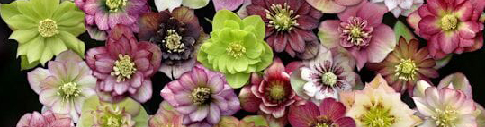

Welkom op mijn website
Deze website gaat over mijn favoriete plant, de Helleborus, ook wel kerstroos of nieskruid genoemd.

Helleborus, is een zeer geliefde vaste plant in de tuin. Dit komt mede doordat de sterke planten in de winter al bloeien met prachtige bloemen. De tientallen soorten helleborus die in Zuid- en Midden-Europa tot in West-Azië voorkomen, behoren tot de boterbloemenfamilie. De meest bekende variant hiervan is de kerstroos, ofwel helleborus niger.
Verzorging
In pot gekochte planten die je eerst een tijdje in de woonkamer zet kunnen daarna in de tuin worden geplant. De planten houden van een beschut, half beschaduwd plekje en kunnen hier jarenlang kunnen blijven staan. Alle helleborussen houden van humusrijke grond die wat kalk bevat. Qua verzorging alleen jaarlijks voorzien van extra voeding en verder met rust laten. Ze zullen dan steeds rijker gaan bloeien.
Standplaats
November is een goede maand om deze tuinplant een plekje in de tuin te geven. De kerstroos, helleborus niger, kan overal in de tuin worden geplant. Zowel in de halfschaduw als op een zonnig plekje. Vanaf november tot in maart zijn de prachtige bloemen te zien. Zelfs sneeuw of vorst doen de kerstroos niets. Als de tuinplant het naar z'n zin heeft, komt hij elk jaar opnieuw tot bloei.
Insecten lokkers
Er zijn rassen met enkele en met gevulde bloemen. Die bloemen hebben iets bijzonders: het zijn niet de kroonbladen, maar de kelkbladen die de kleur dragen. Ze zijn tot ver in juni heel decoratief. De kroonbladen lijken te ontbreken, maar zijn in werkelijkheid veranderd in kleine nectar-gevende orgaantjes die met hun zoete vocht insecten lokken voor de bestuiving van de knikkende bloemen.
Een paar soorten
De Helleborus niger is de bekende kerstroos.
Vanaf net voor of na kerst bloeit deze plant met helderwitte bloemen en een geelgroen hartje met gele meeldraden.
Met het donkergroene blad een schitterend gezicht in de sneeuw!
De Helleborus purpurascens bloeit van januari tot april
met prachtige rode bloemen en wordt zo’n 40 cm hoog.
De lange meeldraden en overhangende trossen bloemen zijn typerend voor deze soort.
De Helleborus sternii is een geliefde variant.
Tussen de ruw gerande bladeren verschijnen in januari de zachtroze bloemen met een groene zweem.
De plant blijft tot april in bloei.
Een vorm uit de stal van de Ashwood Nurseries in Engeland
U vindt ze ook onder de naam Ashwood Garden Hybrids.
Deze donkere, dubbele bloem is een nakomeling van veel verschillende soorten.
Ziekten en plagen
Helleborussen zijn gevoelig voor bladvlekkenziekte. Dit is vooral in het najaar, tegen de tijd dat de bloeistengels van de plant verschijnen. Bladvlekkenziekte kun je makkelijk herkennen aan de zwarte plekken op het blad. Je kunt de ziekte voorkomen en bestrijden door in het najaar het oude blad weg te knippen. Zo verklein je de kans dat het nieuwe blad de ziekte overneemt. Winstpuntje bij het wegknippen van het oude blad is ook dat de prachtige bloemen van de helleborus dan ook veel beter tot hun recht komen.
Geveltuin
Heb jij een geveltuintje? Daarvoor is de kerstroos is een ideale plant. Dat komt omdat de grond rondom een gevel of muur vaak veel kalk bevat en daar is de kerstroos dol op.
Leuk weetje
Heel interessant is de manier waarop deze planten hun bloemen tegen vorst beschermen. Als het flink gaat vriezen pompt de plant het vocht, dat ze tijdelijk in de bladeren en wortels opslaan, eruit. Hierdoor hangen de bloemen dan even slap, maar ze bevriezen niet. Zodra het weer beter wordt, komt het vocht terug en staan de bloemen er snel weer stralend bij!